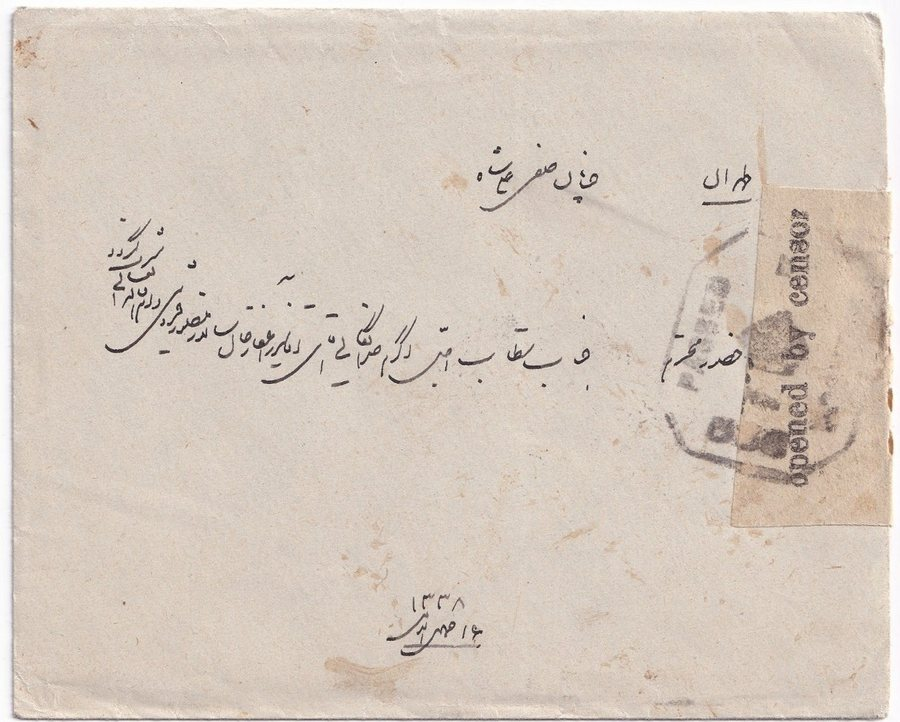
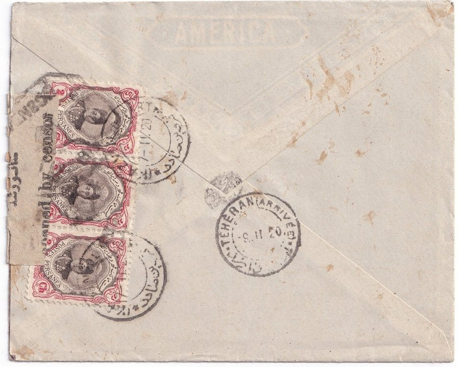

Skip to content
Persian Postal History
تاریخ پستی ایران
Home
Education
Rates
Censors
Forgeries
Collection
Resources
Censors
/
British forces, north
/
Qazvin to Tehran
Cover 14 of 19 from British forces, north.
Previous in British forces, north
Qazvin to Tehran, 20 Jan 1920
British forces, north
19
1909
1910
1911
1912
1913
1914
1915
1916
1917
1918
1919
1920
1921
1922
1923
1924
1925
Next in British forces, north
Tabriz to Tehran, rec. 25 Feb 1920
Qazvin to Tehran
قزوین به تهران

Front.

Back.
Previous: Qazvin to Tehran
Back to all British forces, north covers
Next: Tabriz to Tehran
Close